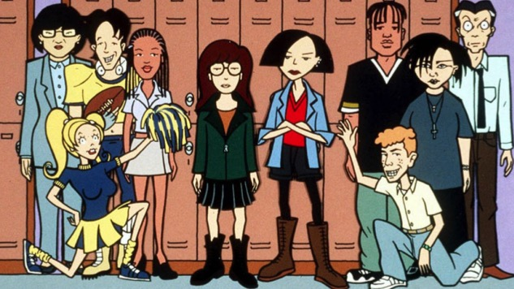

Sobre
Daria, é a personagem principal da sua própria série. Ela é uma adolescente cercada por pessoas superficiais e a tentar passar por esta fase da vida da melhor maneira que consegue, com bastante desprezo, sarcasmo e um pouco de curiosidade.
Daria com alguns colegas e professores.
Personalidade
- Inteligente
- Sarcástica
- Cínica
Amigos
Durante a serie a Daria faz uma grande amiga